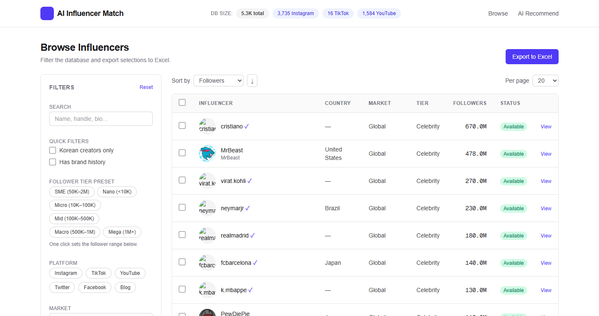

전현식
Global AI Strategist
Portfolio: https://portfolio-app-5ca9.vercel.app/
jeonhs9110@gmail.com | Seoul, Korea
+82 10-4092-0628 | www.linkedin.com/in/jeonhyunsik | github.com/jeonhs9110

주요 프로젝트 01
AIIM — AI 인플루언서 매칭 전현식 (1인 개발)
Python · FastAPI · Next.js 14 · LangGraph · GraphRAG · PostgreSQL (Cloud SQL) · Selenium · YouTube Data API · Meta Graph API · LLM · GCP Cloud Run
YouTube + Instagram + TikTok에서 14개 언어권 5,300명+ 크리에이터를 수집하고, LangGraph 기반 에이전트 워크플로 + GraphRAG 검색으로 브랜드 브리프에 가장 적합한 인플루언서를 근거와 함께 랭킹하는 엔드투엔드 클라우드 플랫폼. 다국어 해시태그 전략으로 30분 실행에 YouTube 신규 400명 확보, IG 비즈니스 이메일 323건 자동 추출. Google Cloud(Cloud Run + Cloud SQL)에서 24/7 운영. Live: aiim-frontend-559416574965.asia-northeast3.run.app · GitHub: github.com/jeonhs9110/AIIM-Showcase
기술 파이프라인 세부 내용
- 1. LangGraph 에이전트 워크플로 브리프 해석 → 후보 검색 → 다기준 평가 → 근거 서술을 상태 그래프로 모델링 (재시도/분기/휴먼-인-더-루프 포함)
- 2. GraphRAG 검색 크리에이터·카테고리·브랜드 협업 관계를 지식 그래프로 인코딩해 "왜 이 크리에이터인가"를 구조적 근거로 제시
- 3. 멀티 플랫폼 수집 YouTube (1,584) · Instagram (3,735) · TikTok (16) — 총 5,300명+
- 4. 다국어 해시태그 전략 14개 문자 체계(광고 · スポンサー · رعاية 등) 검색으로 영어 수렴 한계 돌파
- 5. LLM 데이터 보강 국가·언어·브랜드 협업·카테고리·연락처 자동 추출 + 프롬프트 캐싱
- 6. 인프라 GCP asia-northeast3 — Cloud Run + Cloud SQL Postgres + Cloud Build CI
